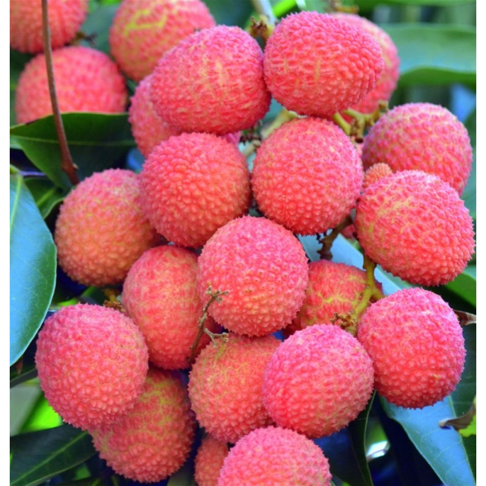

Les nouvelles de ton île
Choisis un article pour lire les infos importantes sur le volcan, les baleines et le letchi.

Alerte Rouge : La Lave du Volcan a Rejoint la Mer !
Depuis le 13 février 2026, le Piton de la Fournaise est en éruption. En mars, la lave a avancé jusqu'à la route des Laves puis vers l'océan.
Lire l'article
Les Baleines à Bosse : Les Géantes de l'Océan Indien
Chaque année, les baleines à bosse reviennent près de La Réunion. On peut les admirer, mais toujours en les respectant.
Lire l'article
Le Letchi : Le Trésor Rouge de La Réunion
Le letchi est le fruit star des fêtes à La Réunion. Il est sucré, juteux et très précieux quand la météo devient difficile.
Lire l'article